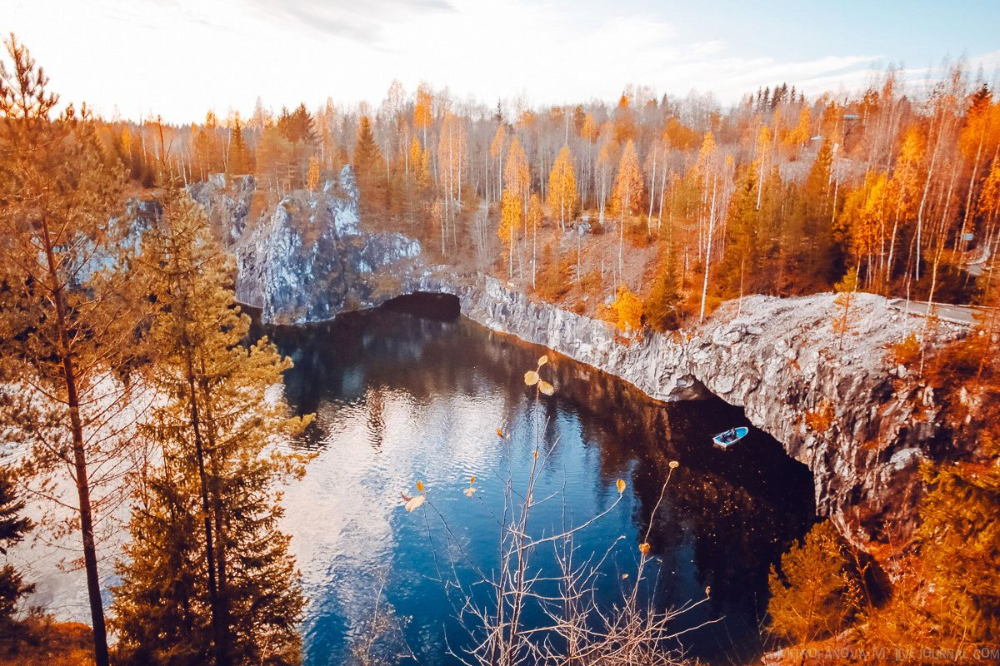

Teriberka, Murmansk Region
About the Place : The only village on the shores of the Barents Sea that is accessible by car, it is named after the river of the same name on the Kola Peninsula. The settlement was first mentioned in the 16th century as a stopping place for fish traders and, in Soviet times, it became one of the prime fishing spots in the Arctic. During the crisis of the 1990s, most fishing enterprises closed down and local residents started relocating to larger towns and cities. Today, around 700 people live there. In 2014, it gained some fame, when Russian director Andrei Zvyagintsev shot some scenes here for his movie ‘Leviathan’. After its release, Teriberka experienced a minor tourist boom. But most tourists come to the village for the Northern Lights, Arctic cuisine, fishing and excursions to local waterfalls, while others are keen for sporting activities, such as kitesurfing (the wind never stops there), diving and hiking in the unique northern landscapes.
Activities : Fishing
Ruskeala Mountain Park, Karelia
About the Place : In the 17th-19th centuries, a half-kilometer long quarry was located on the site of the park, where white marble was mined that was later used for the construction of St Petersburg’s Kazan and St Isaac’s cathedrals. The quarry was flooded in the 20th century; then, in the 2000s, the surrounding area was furnished with walking trails and observation platforms and divers began to explore the dug-out caves and grottos. Tourists come to admire the lightly colored marble fossils, blue-turquoise water and greenery that frame the mountain peaks. Those who are not afraid of heights can view the park from above -whizzing down a zipline. According to tourists, the 20-second flight makes an impression that lasts a lifetime.
Activities : Exploration
Khibiny Mountains, Murmansk Region
About the Place : Aykuayvenchorr and Kukisvumchorr are two of the most popular ski resorts in the Russian North, both located at the foot of the Khibiny Mountains, which geologists estimate to be over 390 million years old. They receive tourists all year round and not only skiers and snowboarders. From above, the mountains resemble an oval ring traversed by river valleys, lakes, waterfalls and gorges, all surrounded by tundra forest. The mountains are snow-covered even in August-September; during summer, visitors often hike along the local passes and mountain lakes. In winter, the Khibiny Mountains are frequented by skiers and snowboarders, for whom there are several slopes and base camps, as well as fans of snowmobile tours and the Northern Lights.
Activities : ski-ing
Kimzha, Arkhangelsk Region

About the Place : From a distance, the most beautiful village in the Russian North (according to a 2017 poll) appears nondescript: three rows of houses, for no more than 100 people, and two small mills. In fact, it’s a genuine open-air museum with authentic northern log huts, barns and the wooden Church of the Hodegetria built in 1709. Kimzha was first mentioned in ancient chronicles in the early 16th century. Residents of neighboring villages were convinced that people living in Kimzha had the power of the evil eye and could cast curses. They were even given a collective nickname, chernotropy (those on a black path, meaning sorcerers). Until 1951, the village did not even have its own cemetery because the locals buried their loved ones next to their houses, believing that the spirits of their ancestors would protect their home from harm. During summer and winter holidays, the children and grandchildren of local residents visit the village, making Kimzha resemble a Russian fairy tale even more.
Activities : Museum
Solovetsky Islands, Arkhangelsk Region

About the Place : The Solovetsky Islands — the largest archipelago in the White Sea, consisting of six large and more than 100 small islands — are visited every year by up to 20,000 tourists, either by boat or helicopter from the mainland. And not without reason: Visitors are greeted by a vast museum-reserve complex, at the heart of which is the Solovetsky Monastery, built in the first half of the 16th century. In Soviet times, a state collective farm stood on the monastery’s site, as well as a forced labor camp, which later was turned into a prison. One can also view the Solovetsky Kremlin, with its walls of granite boulders, plus numerous churches, including the lighthouse chapel on Gora Sekirnaya (Hatchet Hill). The islands are often shrouded in fog, adding even more atmosphere to the majestic landscapes. In summer, visitors can go boating on the local lakes and, in July-August, there is whale-watching to be had at Cape Beluga. And then there is Bolshoi Zayatsky Island, home to mysterious labyrinths that can be explored (to this day, no one knows who built them and why), as well as bearded seals that sometimes swim to the shore.
Activities : Museum